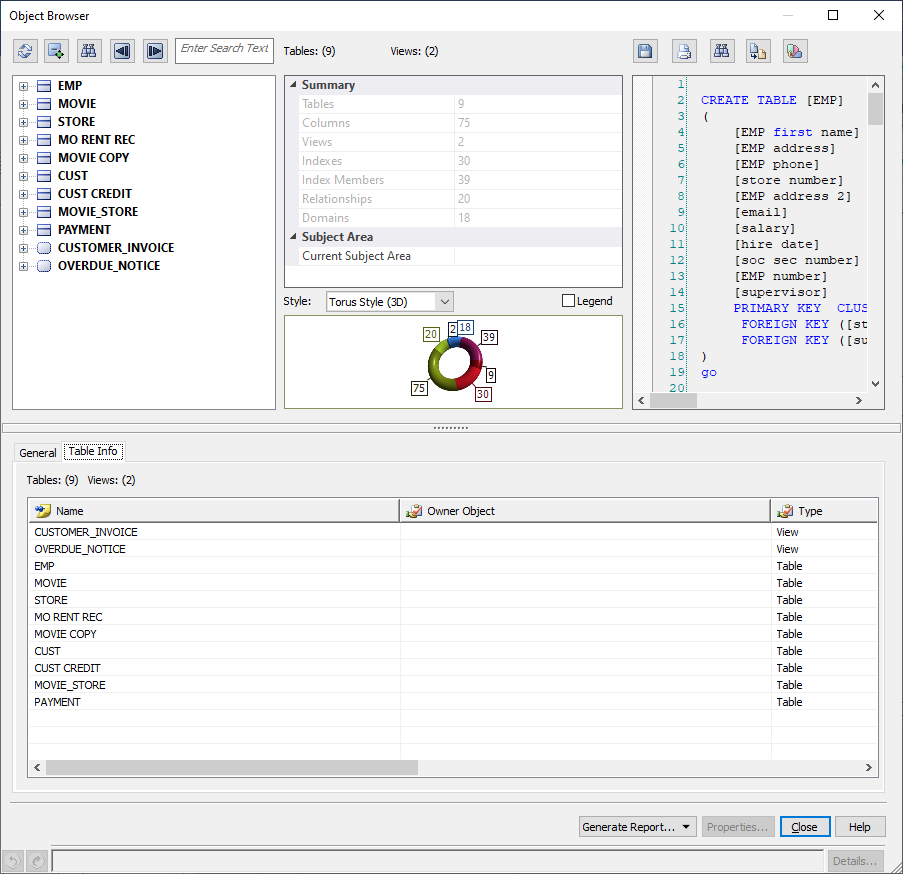
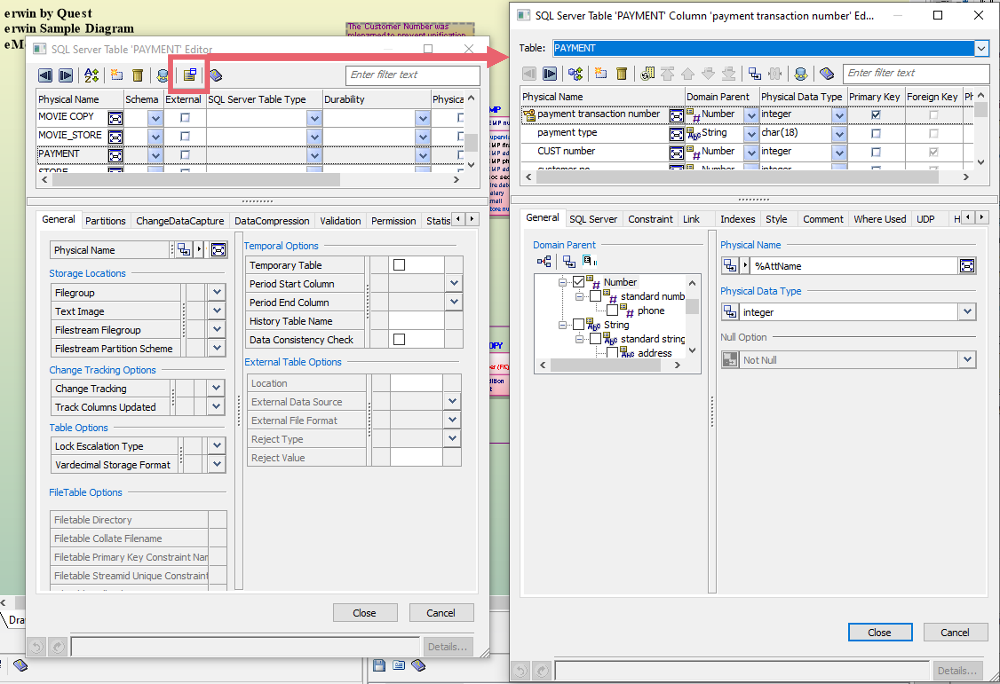
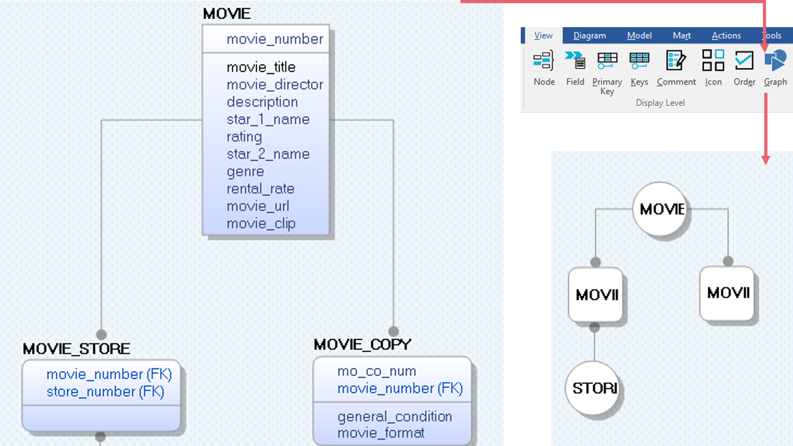
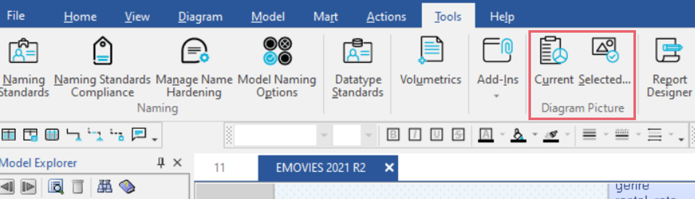
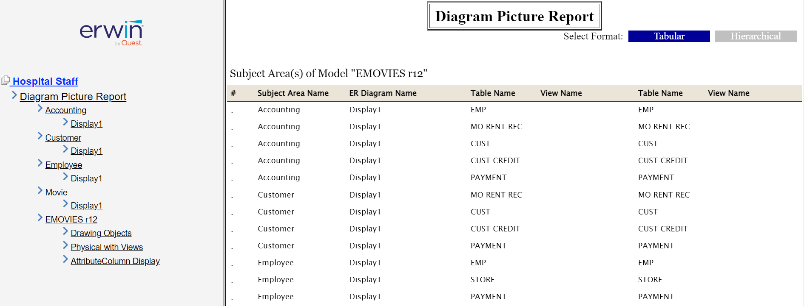

Several additions and enhancements have been implemented to improve erwin Data Modeler's (DM) productivity and usage experience. These enhancements are:
Denormalization and deriving models now creates new models instead of overwriting source models.
A new tab, <Object> Info has been added for all databases. It displays tables, records, collections, documents, JSON Objects, and nodes, in your model or in the selected object along with the counts based on database. Apart from this, for Couchbase and Neo4j models, database-specific tabs have been added:
The Couchbase tab displays global indexes and full text indexes along with their counts.
The Neo4j tab displays global indexes and global constraints along with their counts.

You can now access the columns of a table via the table editor instead of having to open the column editor explicitly. Use the icon on the table editor.

A new display level, Graph, has been added to facilitate easier switch for graph databases. Derived NoSQL graph models have table-like representation by default. To convert such models to graph-like representation, on the ribbon, go to View > Display Level group. Then, click . This converts the model diagram as follows:

You can now generate picture reports of a single or multiple diagrams in one submission in the following formats:
To generate diagram picture, open a model, go to Tools > Diagram Picture. Then, select either of the following option to generate picture:

You can now generate an enhanced report in the HTML format. To generate reports, open a model, go to Tools > Report Designer. The erwin Report Designer page appears. Use erwin Report Designer to generate reports in the HTML format. For more information, refer to the Create Reports Using Report Designer topic.
